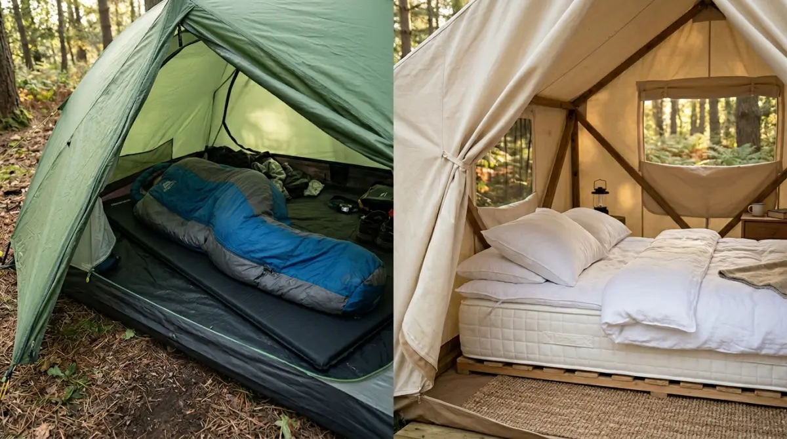

Glamping vs Camping — dua
cara berbeda menikmati alam bebas yang sama-sama menyenangkan.
Glamping vs Camping — dua
cara berbeda menikmati alam bebas yang sama-sama menyenangkan.
Pernah nggak sih kamu merasa waktu berjalan begitu cepat? Dari Senin ke Jumat isinya cuma layar laptop, rentetan meeting, dan deadline yang seolah nggak ada habisnya. Tiba-tiba kalender sudah berganti bulan, dan kamu sadar belum sempat benar-benar 'bernapas'. Rasanya sayang banget kalau masa mudamu atau momen emas pertumbuhan anak-anak cuma dihabiskan di depan meja kerja atau terjebak kemacetan kota.
Jangan sampai di masa depan, kamu menyesal karena terlalu sibuk bekerja sampai lupa menciptakan kenangan manis bersama keluarga saat fisik masih prima dan energi masih penuh. Sesekali, kamu butuh pelarian nyata ke ekosistem yang berbeda untuk me-reset pikiran.
Nah, ketika bicara soal liburan di alam, pasti muncul dilema: mending camping konvensional atau glamping ya? Supaya rencana pelarianmu nggak malah jadi beban baru, mari kita bedah tuntas beda glamping dan camping agar kamu bisa memilih opsi yang paling pas.
Memahami Esensi Liburan di Alam Terbuka
Sebelum kita masuk ke perbandingan teknis, mari kita samakan persepsi dulu. Berada di alam terbuka punya cara magis untuk menyembuhkan lelah mental. Udara segar yang bebas polusi, suara jangkrik di malam hari, hingga momen magis menantikan matahari terbit (sunrise) dari balik siluet pegunungan adalah kemewahan yang tidak bisa dibeli dengan uang di tengah hiruk-pikuk ibukota.
Namun, cara orang menikmati alam itu berbeda-beda. Ada yang suka tantangan dan proses bertahan hidup, ada pula yang sekadar ingin pindah tempat tidur dengan pemandangan yang lebih hijau. Dari sinilah lahir dua kubu yang sering diperdebatkan: tim camping dan tim glamping (glamorous camping).
4 Beda Glamping dan Camping yang Wajib Kamu Tahu
Agar kamu tidak salah pilih dan malah zonk saat liburan, berikut adalah perbedaan mendasar antara keduanya dari kacamata praktis di lapangan.
1. Persiapan Logistik: Antara "Membangun Startup" dan "Masuk Manajemen"
Bicara soal logistik, analoginya mirip dengan dunia kerja. Camping konvensional itu ibarat kamu sedang membangun startup dari nol. Semuanya harus kamu kerjakan sendiri. Kamu butuh daftar periksa (checklist) yang panjang: tenda, pasak, palu, flysheet, matras, alat masak, gas portabel, hingga kantong sampah. Proses mendirikan tenda pun butuh kerja sama tim.
Kadang kamu harus berdebat kecil dengan teman atau pasangan soal cara memasang rangka tenda yang benar. Tapi, di situlah letak kepuasannya. Ada rasa bangga yang luar biasa saat tenda berhasil berdiri kokoh.
Sebaliknya, glamping itu seperti kamu masuk ke perusahaan korporat yang sudah mapan dengan posisi manajerial. Kamu tidak perlu memikirkan infrastruktur. Kamu datang, bawa koper atau ransel berisi baju ganti, tunjukkan bukti booking, dan langsung masuk ke "kamar" yang sudah rapi.
2. Tingkat Kenyamanan: Kasur Bintang Lima vs Sleeping Bag
Kenyamanan tidur adalah faktor krusial, apalagi kalau kamu berlibur di kawasan dataran tinggi yang dingin seperti area Batu atau Malang.
Dalam camping, alas tidurmu adalah matras tipis dan kantong tidur (sleeping bag). Bagi pemula, tidur beralaskan tanah yang keras mungkin akan membuat punggung terasa pegal di pagi hari. Belum lagi urusan kondensasi di mana dinding dalam tenda bisa berembun jika ventilasi tidak diatur dengan baik.
Di sisi lain, glamping menawarkan kemewahan ala hotel berbintang. Kamu akan tidur di atas kasur spring bed yang empuk, bantal yang tebal, dan selimut hangat. Beberapa tempat glamping premium bahkan dilengkapi dengan AC atau pemanas ruangan. Jika kamu membawa anak balita, glamping jelas menawarkan keamanan dan kenyamanan tidur yang jauh lebih terjamin.

Perbedaan fasilitas — dari tenda kasur empuk glamping hingga sleeping bag camping konvensional.3. Urusan Perut dan Toilet: Survival Mode vs Layanan Penuh
Ini adalah metrik pembeda yang paling sering jadi bahan pertimbangan utama.
Kalau kamu memilih camping, kamu adalah chef untuk dirimu sendiri. Memasak di alam terbuka adalah seni. Mengiris daging untuk BBQ sederhana, merebus air untuk menyeduh kopi saset di tengah suhu dingin, hingga mencuci alat makan menggunakan air seadanya adalah bagian dari petualangan. Untuk urusan toilet, kamu harus bersiap dengan fasilitas MCK umum yang kondisinya sangat bergantung pada pengelola campground.
Beda halnya dengan glamping. Urusan perut sudah dijamin. Banyak pengelola glamping yang menyediakan paket makan malam, termasuk set BBQ di mana dagingnya sudah dimarinasi dan alat panggangnya sudah disiapkan di depan tendamu. Kamu tinggal duduk manis memanggang daging bersama keluarga. Mayoritas tempat glamping sudah menyediakan kamar mandi dalam (ensuite bathroom) yang estetis, lengkap dengan water heater, kloset duduk, dan amenities seperti sabun dan sampo.
4. Kalkulasi Anggaran: Investasi Jangka Panjang vs Biaya Instan
Mari kita bicara soal budget. Mana yang lebih murah? Jawabannya tergantung perspektif waktumu.
Camping membutuhkan biaya awal (investasi) yang lumayan besar jika kamu memutuskan untuk membeli peralatan sendiri. Tenda berkualitas, kompor, tas carrier, dan sleeping bag bisa menghabiskan dana jutaan rupiah. Namun, setelah alat-alat ini kamu miliki, biaya liburanmu selanjutnya akan sangat murah. Kamu hanya perlu membayar tiket masuk atau sewa lahan yang biasanya berkisar Rp 20.000 hingga Rp 50.000 per malam per orang.
Sementara itu, glamping menggunakan sistem sewa penuh layaknya hotel. Kamu tidak perlu membeli alat apa pun, namun harga per malamnya cukup menguras kantong. Tergantung fasilitas dan lokasi, harga glamping bisa bervariasi dari Rp 400.000 hingga di atas Rp 2.000.000 per malamnya. Ini adalah biaya instan untuk sebuah kepraktisan.
Jadi, Mana yang Cocok Buat Kamu?
Setelah mengetahui beda glamping dan camping, sekarang saatnya mencocokkan dengan profil liburanmu.
Pilih Camping jika kamu:
- Ingin benar-benar disconnect dari rutinitas dan belajar survival skill ringan
- Berlibur bersama teman-teman yang punya fisik kuat dan suka berpetualang
- Punya budget operasional liburan yang terbatas
- Mencari fleksibilitas tinggi untuk berpindah-pindah lokasi
Pilih Glamping jika kamu:
- Membawa keluarga, terutama orang tua atau anak kecil
- Hanya punya waktu akhir pekan yang singkat dan tidak mau ribet
- Ingin menikmati sunrise sambil kopi panas tanpa bangun tenda sendiri
- Punya anggaran lebih untuk ditukar dengan kepraktisan dan fasilitas mewah
Kesimpulan: Jangan Tunda Bahagiamu
Pada akhirnya, karir dan tumpukan pekerjaan memang penting untuk masa depan, tapi kewarasan mental dan momen kebersamaanmu di masa kini jauh lebih berharga. Bayangkan lima atau sepuluh tahun dari sekarang, hal yang paling membekas di ingatan bukanlah berapa lembar laporan yang berhasil kamu selesaikan, melainkan seberapa hangat tawa keluargamu saat memanggang BBQ di bawah taburan bintang.
Tidak peduli apakah kamu akhirnya memilih repotnya camping yang penuh cerita, atau mewahnya glamping yang bikin rileks total, yang terpenting adalah: berangkatlah. Jangan menunggu sampai kamu punya waktu luang yang 'sempurna', karena waktu luang itu harus diciptakan, bukan ditunggu.
FAQ — Glamping vs Camping